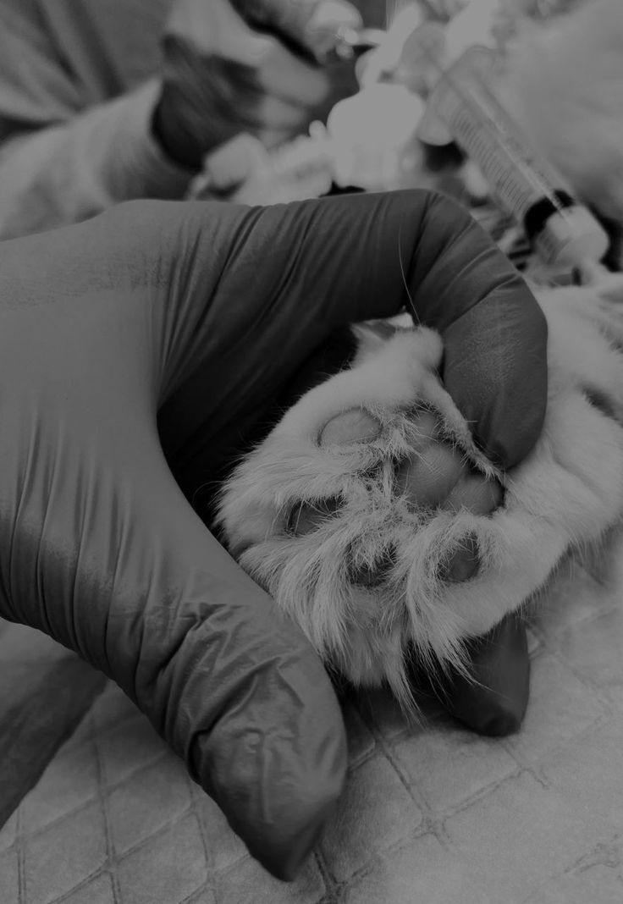
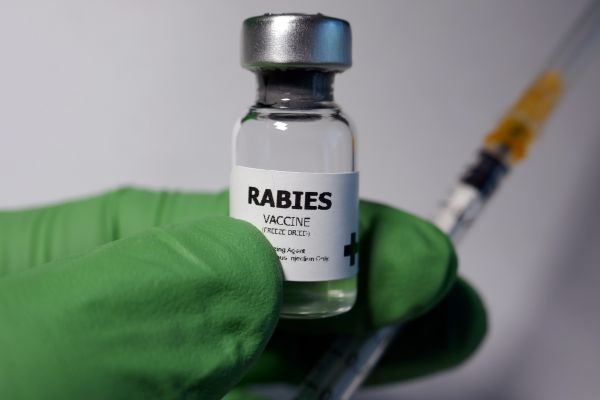

What You Can Do

Contacting our Volunteers
Contacting our Volunteers who reported the cases about the stray dogs in their nearby lives and streets.

Manage Volunteers
Assign volunteers to drives and coordinate activities effectively.

Handle Reported Cases
Review and take action on cases reported by the public and volunteers.